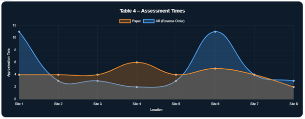

Utility Systems Field Operations Case Study
Digitizing high-stakes inspection workflows in regulated infrastructure environments by transforming fragmented field reporting into structured digital systems.
Utility Systems · Field Inspection & Operational UX
Challenge
Managing critical infrastructure involves complex dependencies across electrical, civil, and mechanical systems. Historically, inspections relied on static, paper-based reporting.
While technically rich, this data remained fragmented across teams and formats, limiting lifecycle traceability and slowing risk evaluation across enterprise systems.

AR feasibility study comparing digital capture vs traditional inspection workflows.
Solution
Digital pilot studies were conducted using augmented capture methods to evaluate whether structured field input could replace paper-based inspection workflows.
Results showed digital capture matched field task timing while improving traceability and downstream system integration.

Structured inspection data was integrated directly into enterprise systems, reducing fragmentation between field operations and lifecycle management tools.
This enabled inspection outputs to become immediately actionable across operational and compliance workflows.